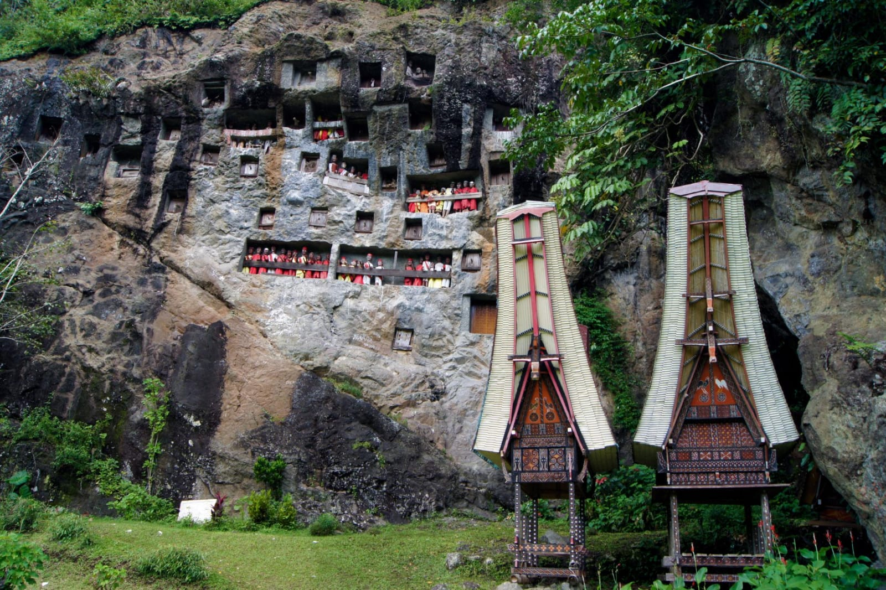

Destinasi Populer

Kete Kesu
Desa adat dengan rumah Tongkonan dan kuburan batu.

Lolai
Dikenal sebagai negeri di atas awan.

Londa
Goa pemakaman tradisional Toraja.

Buntu Burake
Patung Yesus dengan pemandangan indah.